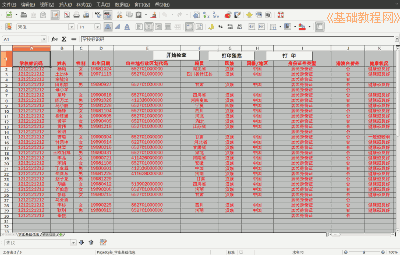

2012-2013 第二学期八年级图像处理教学设计
作者：TeliuTe 来源：基础教程网
二十一、学生基本信息表 返回目录 下一课
（一）教学设计
1、学习目标：学生基本信息表
2、注意事项：绕过弯来，既不要跳也不要落，一楼过了二楼
3、教学过程：
1）教师准备学案和板书；
2）学生整队进入，开机抄黑板上笔记；
3）教师讲解板书演示操作；
4）学生打指法、日志、完成操作；
5）教师打勾记录学生指法成绩，检查日志和操作；
注：学生抄完笔记就开始打指法、日志，老师讲完后再继续完成；
（二）板书设计(学生笔记)
教学7、8 学生基本信息表
1、打开桌面最后一个绿X，点“取消”
2、点“文件、打开、我的文档、8-4”
3、出来安全小框，点中间“启用宏”
————————
4、找到自己的，其他人的拖选行号（最左边），删除
5、输入、点选、右下角滚动条，保存
6、输完，回到开头，点“开始检查”
7、学校标识码 1212121212 十位
8、通过后关闭
————————
9、点右下角小人，提交作业，“浏览添加，我的文档，8-4.xls，打开，开始”
--
操作指南：
1、区划代码：身份证前六位，加六个0 （652701000000）
（自己、父母）
2、上学距离：不要单位，保留1位小数
3、地址格子挨着填，不用担心位置不够
操作图示：

（三）课后记 2013-6-17 16:50
--
分成三块，重点词语加下划线用红粉笔
简单点一下步骤，后面演示的时候会仔细
--
虽然准备了许久，结果还是有许多出错的
这还是八年级的，明天七年级的更得注意
--
下发的是班级表，学生要把其他人的删除
本来是删除行结果成单元格，右移后表格里的函数出错检查过不了
--
行政区划代码也没有，按照身份证前6位加6个0
这个在手写的表上也没有，一个问另一个也问
--
有的身份证号错的，位数不够位数够了数字不对
删错单元格的，可以把所在单元格删除，然后下边移上来就是对的
--
上传的时候要把表格关闭，否则正在使用的不能上传
快的不多，大多数一节课可以传完，累的要命
--
讲的不用太着急了，声音还是有些问题，语气好多了
不是那么慌张，也不生气做错了返工重新做就是了，也不多
--
上午没有做完的中午又来接着做，记得让学生打扫卫生要
后面还要把学生的单表合并起来，这个也费工夫
返回目录 下一课
本教程由86团学校TeliuTe制作|著作权所有
基础教程网：http://teliute.org/
美丽的校园……
转载和引用本站内容，请保留作者和本站链接。